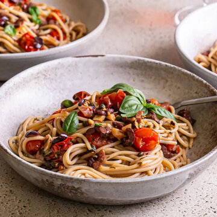

|  |
- 1 large shallot, sliced
- 5 garlic cloves, sliced
- ¼ cup fresh parsley, chopped
- ¼ cup fresh basil, chopped
- 1 cup kalamata olives, pitted and chopped
- ⅓ cup olive oil
- 3 cups cherry tomatoes (about 14-16 ounces)
- 3 tablespoons capers
- 2 tablespoons balsamic vinegar
- 2 tablespoons lemon juice
- 1 teaspoon salt
- ½ teaspoon pepper
- 12 ounces gluten-free spaghetti
|